import numpy as np
import pandas as pd
import matplotlib.pyplot as plt
from tensorflow import keras
from sklearn import metrics as sk_met
from sklearn.metrics import confusion_matrix
np.random.seed(1)
Discovery of Exoplanets with RNNs and CNNs¶
In this exercise sheet, we will investigate a problem very common in astrophysics, the detection of exoplanets. Exoplanets are planets outside of our solar system that orbit any star other than our sun. By definition exoplanets do not emit light themselves, which makes their detection quite tricky. A common technique is using the transit method, which investigates the brightness of a star over time. If a star possesses a planet orbiting it, the brightness will reduce periodically, when the planet is transiting our view axis. You can find a nice visualization here.
Import the data¶
The data we use here was cleaned for a Kaggle competition 2 and is derived from observations made by the NASA Kepler space telescope.
Training set (exoTrain.csv):
5087 rows or observations
198 columns or features
Column 1 is the label vector, columns 2 - 3198 are the flux values over time
37 confirmed exoplanet-stars and 5050 non-exoplanet-stars
Testset (exoTest.csv):
570 rows or observations
3198 columns or features
Column 1 is the label vector, columns 2 - 3198 are the flux values over time
confirmed exoplanet-stars and 565 non-exoplanet-stars
We will now train a recurrent neural network, then preprocess the data and compare to the performance of a convolutional neural network.
# Import the data
df1=pd.read_csv('exoTrain.csv')
df2=pd.read_csv('exoTest.csv')
# Let's take a look..
df2.describe()
| LABEL | FLUX.1 | FLUX.2 | FLUX.3 | FLUX.4 | FLUX.5 | FLUX.6 | FLUX.7 | FLUX.8 | FLUX.9 | ... | FLUX.3188 | FLUX.3189 | FLUX.3190 | FLUX.3191 | FLUX.3192 | FLUX.3193 | FLUX.3194 | FLUX.3195 | FLUX.3196 | FLUX.3197 | |
|---|---|---|---|---|---|---|---|---|---|---|---|---|---|---|---|---|---|---|---|---|---|
| count | 570.000000 | 570.000000 | 570.000000 | 570.000000 | 570.000000 | 570.000000 | 570.000000 | 570.000000 | 570.000000 | 570.000000 | ... | 570.000000 | 570.000000 | 570.000000 | 570.000000 | 570.000000 | 570.000000 | 570.000000 | 570.000000 | 570.000000 | 570.000000 |
| mean | 1.008772 | 515.411351 | 738.046404 | 532.603246 | 739.618088 | 530.949807 | 729.591491 | 517.421404 | 720.723544 | 481.015211 | ... | 60.027754 | 307.682825 | 88.976842 | 301.299895 | 105.121684 | 291.509561 | 256.656789 | 121.810035 | 224.806035 | 133.954544 |
| std | 0.093329 | 12592.950138 | 12622.940170 | 12545.065255 | 12591.933126 | 12512.976544 | 12572.187328 | 12454.094432 | 12525.496793 | 12397.610716 | ... | 9528.594808 | 9588.586341 | 9497.373179 | 9611.024800 | 9611.076529 | 9654.581767 | 9362.719825 | 9487.642217 | 9483.948248 | 9700.731923 |
| min | 1.000000 | -59421.000000 | -14663.430000 | -56580.000000 | -10817.590000 | -54545.000000 | -7744.500000 | -53580.000000 | -6373.400000 | -53832.000000 | ... | -89126.500000 | -89432.070000 | -89759.940000 | -90182.630000 | -90225.760000 | -90595.000000 | -86719.070000 | -86911.500000 | -87123.260000 | -87476.940000 |
| 25% | 1.000000 | -22.230000 | -22.912500 | -22.985000 | -18.662500 | -20.980000 | -21.245000 | -22.675000 | -22.200000 | -22.685000 | ... | -9.602500 | -12.842500 | -15.222500 | -14.350000 | -17.370000 | -18.272500 | -24.000000 | -27.360000 | -36.855000 | -29.475000 |
| 50% | 1.000000 | 1.195000 | 0.410000 | -1.125000 | -0.880000 | -1.495000 | -2.650000 | -4.330000 | -3.910000 | -3.890000 | ... | 3.585000 | 3.795000 | 4.785000 | 3.910000 | 5.575000 | 7.150000 | -4.385000 | -4.995000 | -5.135000 | -3.785000 |
| 75% | 1.000000 | 98.317500 | 89.710000 | 89.827500 | 73.257500 | 66.947500 | 45.147500 | 38.850000 | 37.150000 | 30.670000 | ... | 23.445000 | 20.472500 | 25.582500 | 28.767500 | 27.455000 | 35.810000 | 17.755000 | 11.745000 | 12.265000 | 13.205000 |
| max | 2.000000 | 290882.500000 | 290653.500000 | 290554.000000 | 290486.500000 | 290289.000000 | 289982.500000 | 289197.500000 | 288520.500000 | 287404.500000 | ... | 198420.000000 | 197888.500000 | 199639.000000 | 202007.000000 | 203730.500000 | 205924.000000 | 203193.000000 | 205050.000000 | 206884.500000 | 211488.500000 |
8 rows × 3198 columns
Training an RNN¶
The information in a time series, as the exoplanet data, is contained in the sequence of points rather than their geometrical closeness. This is the idea behind recurrent neural networks (RNNs), where data is fed to the network one after the other.
We import the data into a numpy array, separate the label from the data and plot observation 0 (exoplanet) and 100 (no exoplanet) to get a feeling for the measurements.
train_data=np.array(df1,dtype=np.float32)
test_data=np.array(df2,dtype=np.float32)
# Separate data and label
ytrain=train_data[:,0]
Xtrain=train_data[:,1:]
ytest=test_data[:,0]
Xtest=test_data[:,1:]
m=0 # A chosen exoplanet host star's index
n=100 # A chosen non-exoplanet host star's index
print('Shape of Xtrain:',np.shape(Xtrain),'\nShape of ytrain:',np.shape(ytrain))
plt.plot(Xtrain[m],'r')
plt.title('Light intensity vs time (for an exoplanet star)')
plt.xlabel('Time index')
plt.ylabel('Light intensity')
plt.show()
plt.plot(Xtrain[n],'b')
plt.title('Light intensity vs time (for a non exoplanet star)')
plt.xlabel('Time')
plt.ylabel('Light intensity')
plt.show()
Shape of Xtrain: (5087, 3197)
Shape of ytrain: (5087,)
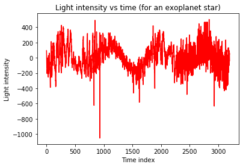
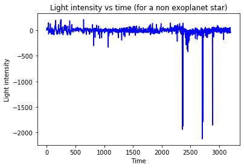
In order to apply a RNN to our dataset, you need to reshape the training set to have the dimensions (5087, 3197, 1).
# reshaping to give as input to the RNN:
Xtrain_rnn = np.reshape(Xtrain,(Xtrain.shape[0],Xtrain.shape[1],1))
Xtest_rnn = np.reshape(Xtest,(Xtest.shape[0],Xtest.shape[1],1))
print('Shape of Xtrain:',np.shape(Xtrain_rnn),'\nShape of ytrain:',np.shape(ytrain))
Shape of Xtrain: (5087, 3197, 1)
Shape of ytrain: (5087,)
# Simple RNN Model:
def Simple_RNN():
model = keras.Sequential()
model.add(keras.layers.SimpleRNN(32,input_shape=(Xtrain_rnn.shape[1],1)))
model.add(keras.layers.Dropout(0.2))
model.add(keras.layers.Dense(1,activation='sigmoid'))
model.compile(loss='binary_crossentropy', optimizer='adam',metrics=['acc'])
return model
estimator=keras.wrappers.scikit_learn.KerasClassifier(build_fn=Simple_RNN,epochs=20,batch_size=64,verbose=1)
# Training:
history=estimator.fit(Xtrain_rnn,ytrain)
Epoch 1/20
80/80 [==============================] - 45s 560ms/step - loss: 0.7494 - acc: 0.5707
Epoch 2/20
80/80 [==============================] - 40s 505ms/step - loss: 0.4557 - acc: 0.7891
Epoch 3/20
80/80 [==============================] - 40s 505ms/step - loss: 0.1594 - acc: 0.9536
Epoch 4/20
80/80 [==============================] - 41s 508ms/step - loss: 0.2059 - acc: 0.9151
Epoch 5/20
80/80 [==============================] - 46s 575ms/step - loss: 0.1025 - acc: 0.9654
Epoch 6/20
80/80 [==============================] - 57s 712ms/step - loss: 0.0887 - acc: 0.9674
Epoch 7/20
80/80 [==============================] - 53s 666ms/step - loss: 0.0928 - acc: 0.9672
Epoch 8/20
80/80 [==============================] - 53s 667ms/step - loss: 0.0901 - acc: 0.9689
Epoch 9/20
80/80 [==============================] - 53s 665ms/step - loss: 0.0768 - acc: 0.9772
Epoch 10/20
80/80 [==============================] - 53s 666ms/step - loss: 0.0774 - acc: 0.9780
Epoch 11/20
80/80 [==============================] - 55s 687ms/step - loss: 0.0800 - acc: 0.9733
Epoch 12/20
80/80 [==============================] - 57s 707ms/step - loss: 0.0742 - acc: 0.9774
Epoch 13/20
80/80 [==============================] - 54s 676ms/step - loss: 0.0847 - acc: 0.9699
Epoch 14/20
80/80 [==============================] - 53s 666ms/step - loss: 0.0816 - acc: 0.9746
Epoch 15/20
80/80 [==============================] - 53s 665ms/step - loss: 0.0803 - acc: 0.9746
Epoch 16/20
80/80 [==============================] - 53s 668ms/step - loss: 0.0779 - acc: 0.9762
Epoch 17/20
80/80 [==============================] - 53s 666ms/step - loss: 0.0764 - acc: 0.9741
Epoch 18/20
80/80 [==============================] - 53s 666ms/step - loss: 0.0763 - acc: 0.9778
Epoch 19/20
80/80 [==============================] - 54s 671ms/step - loss: 0.0811 - acc: 0.9776
Epoch 20/20
80/80 [==============================] - 53s 661ms/step - loss: 0.0701 - acc: 0.9823
loss=history.history['loss']
acc=history.history['acc']
epochs=range(1,len(loss)+1)
plt.title('Training error with epochs')
plt.plot(epochs,loss,'bo',label='training loss')
plt.xlabel('epochs')
plt.ylabel('training error')
plt.show()
plt.plot(epochs,acc,'b',label='accuracy')
plt.title('Accuracy of prediction with epochs')
plt.xlabel('epochs')
plt.ylabel('accuracy')
plt.show()
# make predictions
trainPredict = estimator.predict(Xtrain_rnn,verbose=0)
testPredict = estimator.predict(Xtest_rnn,verbose=0)
plt.title('Training results')
plt.plot(trainPredict,'*',label='Predicted')
plt.plot(ytrain,'o',label='ground truth')
plt.xlabel('Train data sample index')
plt.ylabel('Predicted class (1 or 2)')
plt.legend()
plt.show()
plt.title('Performance of the model on testing data')
plt.plot(testPredict,'*',label='Predicted')
plt.plot(ytest,'o',label='ground truth')
plt.xlabel('Test data sample index')
plt.ylabel('Predicted class (1 or 2)')
plt.legend()
plt.show()
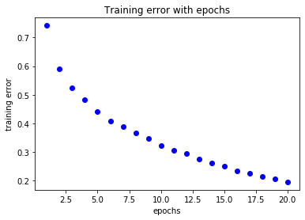
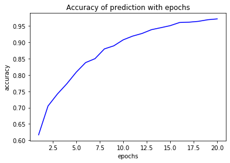
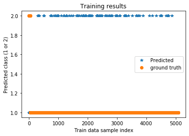
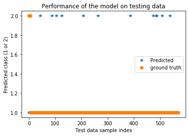
Preprocessing for the CNN¶
In one of the last exercises we used a convolutional neural network (CNN) to classify the MNIST dataset. The superior performance of this approach comes from the fact that the filters applied to the input gather and aggregate information of regions rather than just looking at individual values or pixels. This can also be of use in our problem, however we have to make some transformations to make the data more suited for the classification task.
The signature we are looking for is a periodic reduction of the light intensity, signaling the transit of an exoplanet. It would be beneficial if we could use this knowledge to extract the relevant information from the raw data. Looking at the Fourier transformed version of the data therefore is a straightforward first step.
from scipy.fftpack import fft
# Apply a Fourier transformation since we are looking for a periodic modulation of the brightness
Xtrain=np.abs(fft(Xtrain,n=len(Xtrain[0]),axis=1))
Xtest=np.abs(fft(Xtest,n=len(Xtest[0]),axis=1))
# Take half of the Fourier spectrum since it is symmetric
Xtrain=Xtrain[:,:1+int((len(Xtrain[0])-1)/2)]
print('Shape of Xtrain:',np.shape(Xtrain),'\nShape of ytrain:',np.shape(ytrain))
Xtest=Xtest[:,:1+int((len(Xtest[0])-1)/2)]
# Let's take a look...
plt.plot(Xtrain[m],'r')
plt.title('After FFT (for an exoplanet star)')
plt.xlabel('Frequency')
plt.ylabel('Feature value')
plt.show()
plt.plot(Xtrain[n],'b')
plt.title('After FFT (for a non exoplanet star)')
plt.xlabel('Frequency')
plt.ylabel('Feature value')
plt.show()
Shape of Xtrain: (5087, 1599)
Shape of ytrain: (5087,)
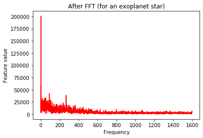
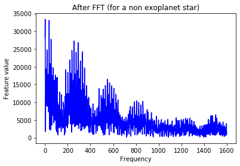
Since the obtained values are quite large, we should normalize the data.
from sklearn.preprocessing import normalize
# To reduce the large values we got in the fft, normalize the data
Xtrain=normalize(Xtrain)
Xtest=normalize(Xtest)
# Let's take a look...
plt.plot(Xtrain[m],'r')
plt.title('After FFT,Normalization (for an exoplanet star)')
plt.xlabel('Frequency')
plt.ylabel('Feature value')
plt.show()
plt.plot(Xtrain[n],'b')
plt.title('After FFT,Normalization (for a non exoplanet star)')
plt.xlabel('Frequency')
plt.ylabel('Feature value')
plt.show()
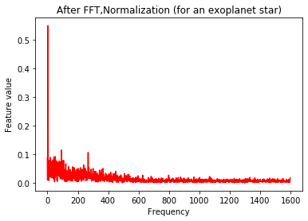
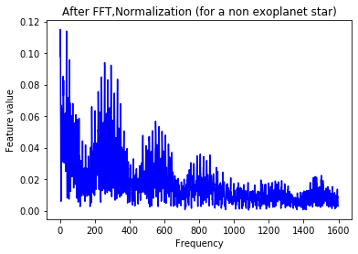
The signal still looks quite messy. In order to smoothen the data, we apply a Gaussian filter to the observations.
from scipy import ndimage
# Still quite messy, so apply a Gaussian filter
Xtrain=ndimage.filters.gaussian_filter(Xtrain,sigma=10)
Xtest=ndimage.filters.gaussian_filter(Xtest,sigma=10)
# Let's take a look...
plt.plot(Xtrain[m],'r')
plt.title('After FFT,Normalization and Gaussian filtering (for an exoplanet star)')
plt.xlabel('Frequency')
plt.ylabel('Feature value')
plt.show()
plt.plot(Xtrain[n],'b')
plt.title('After FFT,Normalization and Gaussian filtering (for a non exoplanet star)')
plt.xlabel('Frequency')
plt.ylabel('Feature value')
plt.show()
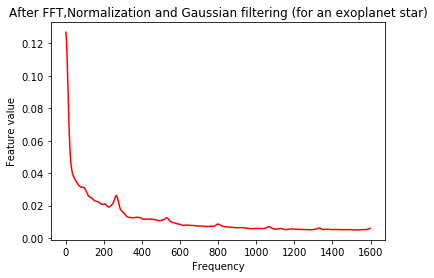
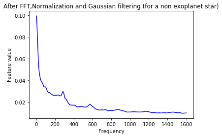
As a final step, we scale the data to lie between 0 and 1.
from sklearn.preprocessing import MinMaxScaler
# Common ranges of values are favoured by alomst all ML algorithms -> rescale
scaler=MinMaxScaler(feature_range=(0,1))
Xtrain=scaler.fit_transform(Xtrain)
Xtest=scaler.fit_transform(Xtest)
# Let's take a look...
plt.plot(Xtrain[m],'r')
plt.title('After FFT,Normalization, Gaussian filtering \n and scaling (for an exoplanet star)')
plt.xlabel('Frequency')
plt.ylabel('Feature value')
plt.show()
plt.plot(Xtrain[n],'b')
plt.title('After FFT,Normalization, Gaussian filtering \n and scaling (for a non exoplanet star)')
plt.xlabel('Frequency')
plt.ylabel('Feature value')
plt.show()
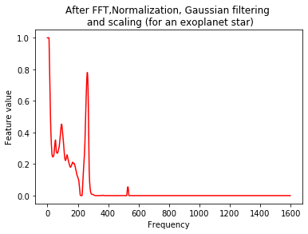
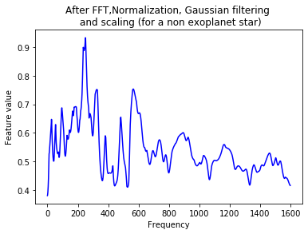
Training a CNN¶
In order to use a CNN, we first have to transform our training data, which means reshaping the training set to have the dimensions (5087, 1599, 1), and similar for the test set.
# Let's copy the data such that we do not overwrite stuff
Y_train_cnn = ytrain.copy()
X_train_cnn = Xtrain.copy()
Y_test_cnn = ytest.copy()
X_test_cnn = Xtest.copy()
# Reshape the data to be used in the CNN
X_test_cnn = np.expand_dims(X_test_cnn, axis=2)
X_train_cnn = np.expand_dims(X_train_cnn, axis=2)
# Since the training dataset is highly imbalanced, we use a class weight in the training process
neg, pos = np.bincount(np.array(Y_train_cnn-1,dtype=np.int64))
total = neg + pos
weight_for_0 = (1 / neg)*(total)/2.0
weight_for_1 = (1 / pos)*(total)/2.0
class_weight = {0: weight_for_0, 1: weight_for_1}
print('Weight for class 0: {:.2f}'.format(weight_for_0))
print('Weight for class 1: {:.2f}'.format(weight_for_1))
Weight for class 0: 0.50
Weight for class 1: 68.74
# Create a CNN as stated on the exercise sheet
def create_model(X_samp, activation='relu', learn_rate=0.01):
model = keras.Sequential()
model.add(keras.layers.Conv1D(filters = 16, input_shape = (X_samp.shape[1],1), kernel_size=(3), activation = activation, kernel_regularizer='l2', padding='same'))
model.add(keras.layers.MaxPooling1D(pool_size = 2, strides = 2))
model.add(keras.layers.Dropout(0.5))
model.add(keras.layers.Flatten())
model.add(keras.layers.Dense(32, activation = activation, kernel_regularizer='l2'))
model.add(keras.layers.Dropout(0.5))
model.add(keras.layers.Dense(2, activation = "sigmoid", kernel_regularizer='l2'))
optimizer = keras.optimizers.Adam(lr=learn_rate)
model.compile(optimizer=optimizer, loss=keras.losses.SparseCategoricalCrossentropy(), metrics=['acc'])
return model
# Creation and training of the CNN
modelcnn = create_model(X_train_cnn)
# Setting the labels to be between 0 and 1 is just convenience
cnn_history = modelcnn.fit(X_train_cnn, Y_train_cnn-1, epochs=10, batch_size=32, shuffle=True, class_weight=class_weight)
Epoch 1/10
159/159 [==============================] - 1s 8ms/step - loss: 1.3238 - acc: 0.8840
Epoch 2/10
159/159 [==============================] - 1s 8ms/step - loss: 1.1571 - acc: 0.7696
Epoch 3/10
159/159 [==============================] - 1s 8ms/step - loss: 0.5033 - acc: 0.8028
Epoch 4/10
159/159 [==============================] - 1s 8ms/step - loss: 0.5681 - acc: 0.6585
Epoch 5/10
159/159 [==============================] - 1s 8ms/step - loss: 0.5173 - acc: 0.9497
Epoch 6/10
159/159 [==============================] - 1s 8ms/step - loss: 0.4624 - acc: 0.9640
Epoch 7/10
159/159 [==============================] - 1s 8ms/step - loss: 0.4948 - acc: 0.9568
Epoch 8/10
159/159 [==============================] - 1s 8ms/step - loss: 0.4469 - acc: 0.9611
Epoch 9/10
159/159 [==============================] - 1s 9ms/step - loss: 0.3985 - acc: 0.9845
Epoch 10/10
159/159 [==============================] - 1s 8ms/step - loss: 0.5116 - acc: 0.9560
loss=cnn_history.history['loss']
acc=cnn_history.history['acc']
epochs=range(1,len(loss)+1)
plt.title('Training error with epochs')
plt.plot(epochs,loss,'bo',label='training loss')
plt.xlabel('epochs')
plt.ylabel('training error')
plt.show()
plt.plot(epochs,acc,'b',label='accuracy')
plt.title('Accuracy of prediction with epochs')
plt.xlabel('epochs')
plt.ylabel('accuracy')
plt.show()
# make predictions
trainPredict_cnn = modelcnn.predict_classes(X_train_cnn,verbose=0)
testPredict_cnn = modelcnn.predict_classes(X_test_cnn,verbose=0)
plt.title('Training results')
plt.plot(trainPredict_cnn+1,'*',label='Predicted')
plt.plot(ytrain,'o',label='ground truth')
plt.xlabel('Train data sample index')
plt.ylabel('Predicted class (1 or 2)')
plt.legend()
plt.show()
plt.title('Performance of the model on testing data')
plt.plot(testPredict_cnn+1,'*',label='Predicted')
plt.plot(ytest,'o',label='ground truth')
plt.xlabel('Test data sample index')
plt.ylabel('Predicted class (1 or 2)')
plt.legend()
plt.show()
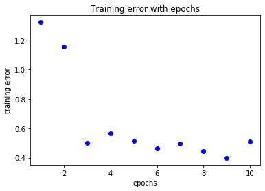
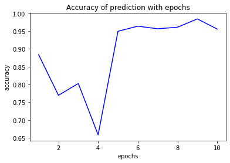
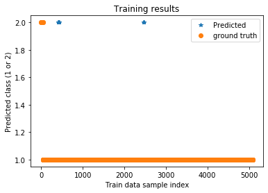
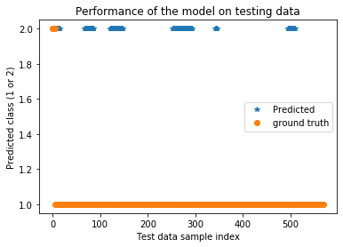
Evaluation¶
Now we will investigate the performance of the models on the test dataset.
print('Confusion matrix for the RNN')
matrix = confusion_matrix(ytest,testPredict, labels=[1, 2])
fig, ax = plt.subplots()
ax.matshow(matrix, cmap=plt.cm.Blues)
for i in range(2):
for j in range(2):
c = matrix[j,i]
ax.text(i, j, str(c), va='center', ha='center')
plt.xlabel("Predicted")
plt.ylabel("True")
plt.show()
Confusion matrix for the RNN
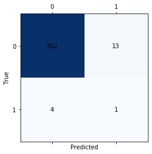
print('Confusion matrix for the CNN')
matrix = confusion_matrix(Y_test_cnn-1,testPredict_cnn)
fig, ax = plt.subplots()
ax.matshow(matrix, cmap=plt.cm.Blues)
for i in range(2):
for j in range(2):
c = matrix[j,i]
ax.text(i, j, str(c), va='center', ha='center')
plt.xlabel("Predicted")
plt.ylabel("True")
plt.show()
Confusion matrix for the CNN
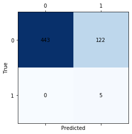
# Calculate some performance measures on test and training data for the RNN
accuracy_train=sk_met.balanced_accuracy_score(ytrain,trainPredict)
accuracy_test= sk_met.balanced_accuracy_score(ytest,testPredict)
print('\t\t train data \t test data')
print('bal. acc. : ',accuracy_train,'\t',accuracy_test)
precision_train=sk_met.precision_score(ytrain,trainPredict)
precision_test=sk_met.precision_score(ytest,testPredict)
print('precision: ',precision_train,'\t',precision_test)
recall_train=sk_met.recall_score(ytrain,trainPredict)
recall_test=sk_met.recall_score(ytest,testPredict)
print('recall: ',recall_train,'\t',recall_test)
train data test data
bal. acc. : 0.5987021675140487 0.588495575221239
precision: 0.9941813804173355 0.9928057553956835
recall: 0.9811881188118812 0.9769911504424779
# Calculate some performance measures on test and training data for the CNN
accuracy_train=sk_met.balanced_accuracy_score(ytrain-1,trainPredict_cnn)
accuracy_test= sk_met.balanced_accuracy_score(ytest-1,testPredict_cnn)
print('\t\t train data \t test data')
print('bal. acc. : ',accuracy_train,'\t',accuracy_test)
precision_train=sk_met.precision_score(ytrain-1,trainPredict_cnn)
precision_test=sk_met.precision_score(ytest-1,testPredict_cnn)
print('precision: ',precision_train,'\t',precision_test)
recall_train=sk_met.recall_score(ytrain-1,trainPredict_cnn)
recall_test=sk_met.recall_score(ytest-1,testPredict_cnn)
print('recall: ',recall_train,'\t',recall_test)
train data test data
bal. acc. : 0.9983168316831683 0.8920353982300885
precision: 0.6851851851851852 0.03937007874015748
recall: 1.0 1.0
Here you can see the problem with different performance measures: We can reach a recall of one, simply because there are no false negatives. However the large number of false positives yields a low precision. In this case the balanced accuracy seems to be the best metric.
# reshaping to give as input to the LSTM:
Xtrain_lstm = np.reshape(Xtrain,(Xtrain.shape[0],Xtrain.shape[1],1))
Xtest_lstm = np.reshape(Xtest,(Xtest.shape[0],Xtest.shape[1],1))
print('Shape of Xtrain:',np.shape(Xtrain_lstm),'\nShape of ytrain:',np.shape(ytrain))
Shape of Xtrain: (5087, 1, 1599)
Shape of ytrain: (5087,)
# LSTM RNN Model:
def LSTM_RNN():
model = keras.Sequential()
model.add(keras.layers.LSTM(32,input_shape=(Xtrain_lstm.shape[1],1)))
model.add(keras.layers.Dropout(0.2))
model.add(keras.layers.Dense(1,activation='sigmoid'))
model.compile(loss='binary_crossentropy', optimizer='adam',metrics=['acc'])
return model
estimator=keras.wrappers.scikit_learn.KerasClassifier(build_fn=LSTM_RNN,epochs=10,batch_size=64,verbose=1)
# Training:
history_lstm=estimator.fit(Xtrain_lstm,ytrain)
Epoch 1/10
80/80 [==============================] - 0s 2ms/step - loss: 0.0768 - acc: 0.9801
Epoch 2/10
80/80 [==============================] - 0s 2ms/step - loss: 0.0357 - acc: 0.9935
Epoch 3/10
80/80 [==============================] - 0s 2ms/step - loss: 0.0223 - acc: 0.9967
Epoch 4/10
80/80 [==============================] - 0s 2ms/step - loss: 0.0157 - acc: 0.9978
Epoch 5/10
80/80 [==============================] - 0s 2ms/step - loss: 0.0109 - acc: 0.9982
Epoch 6/10
80/80 [==============================] - 0s 2ms/step - loss: 0.0088 - acc: 0.9988
Epoch 7/10
80/80 [==============================] - 0s 2ms/step - loss: 0.0068 - acc: 0.9990
Epoch 8/10
80/80 [==============================] - 0s 2ms/step - loss: 0.0061 - acc: 0.9988
Epoch 9/10
80/80 [==============================] - 0s 2ms/step - loss: 0.0063 - acc: 0.9988
Epoch 10/10
80/80 [==============================] - 0s 2ms/step - loss: 0.0041 - acc: 0.9994
loss=history_lstm.history['loss']
acc=history_lstm.history['acc']
epochs=range(1,len(loss)+1)
plt.title('Training error with epochs')
plt.plot(epochs,loss,'bo',label='training loss')
plt.xlabel('epochs')
plt.ylabel('training error')
plt.show()
plt.plot(epochs,acc,'b',label='accuracy')
plt.title('Accuracy of prediction with epochs')
plt.xlabel('epochs')
plt.ylabel('accuracy')
plt.show()
# make predictions
trainPredict_lstm = estimator.predict(Xtrain_lstm,verbose=0)
testPredict_lstm = estimator.predict(Xtest_lstm,verbose=0)
plt.title('Training results')
plt.plot(trainPredict_lstm,'*',label='Predicted')
plt.plot(ytrain,'o',label='ground truth')
plt.xlabel('Train data sample index')
plt.ylabel('Predicted class (1 or 2)')
plt.legend()
plt.show()
plt.title('Performance of the model on testing data')
plt.plot(testPredict_lstm,'*',label='Predicted')
plt.plot(ytest,'o',label='ground truth')
plt.xlabel('Test data sample index')
plt.ylabel('Predicted class (1 or 2)')
plt.legend()
plt.show()
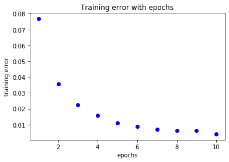
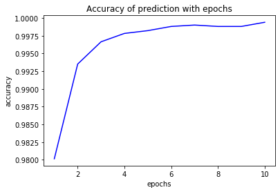
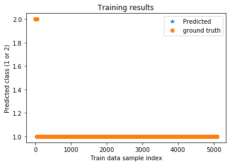
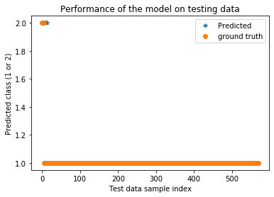
# Calculate some performance measures on test and training data for the LSTM
accuracy_train=sk_met.balanced_accuracy_score(ytrain,trainPredict_lstm)
accuracy_test= sk_met.balanced_accuracy_score(ytest,testPredict_lstm)
print('\t\t train data \t test data')
print('bal. acc. : ',accuracy_train,'\t',accuracy_test)
precision_train=sk_met.precision_score(ytrain,trainPredict_lstm)
precision_test=sk_met.precision_score(ytest,testPredict_lstm)
print('precision: ',precision_train,'\t',precision_test)
recall_train=sk_met.recall_score(ytrain,trainPredict_lstm)
recall_test=sk_met.recall_score(ytest,testPredict_lstm)
print('recall: ',recall_train,'\t',recall_test)
train data test data
bal. acc. : 0.9594594594594594 0.9929203539823008
precision: 0.9994062932911142 1.0
recall: 1.0 0.9858407079646018
print('Confusion matrix for the LSTM')
matrix = confusion_matrix(ytest,testPredict_lstm, labels=[1, 2])
fig, ax = plt.subplots()
ax.matshow(matrix, cmap=plt.cm.Blues)
for i in range(2):
for j in range(2):
c = matrix[j,i]
ax.text(i, j, str(c), va='center', ha='center')
plt.xlabel("Predicted")
plt.ylabel("True")
plt.show()
Confusion matrix for the LSTM
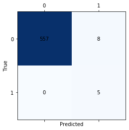
- 2
https://www.kaggle.com/keplersmachines/kepler-labelled-time-series-data